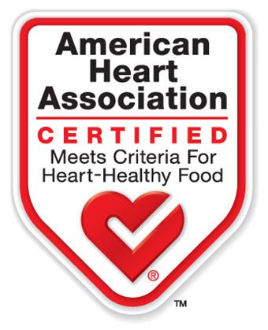
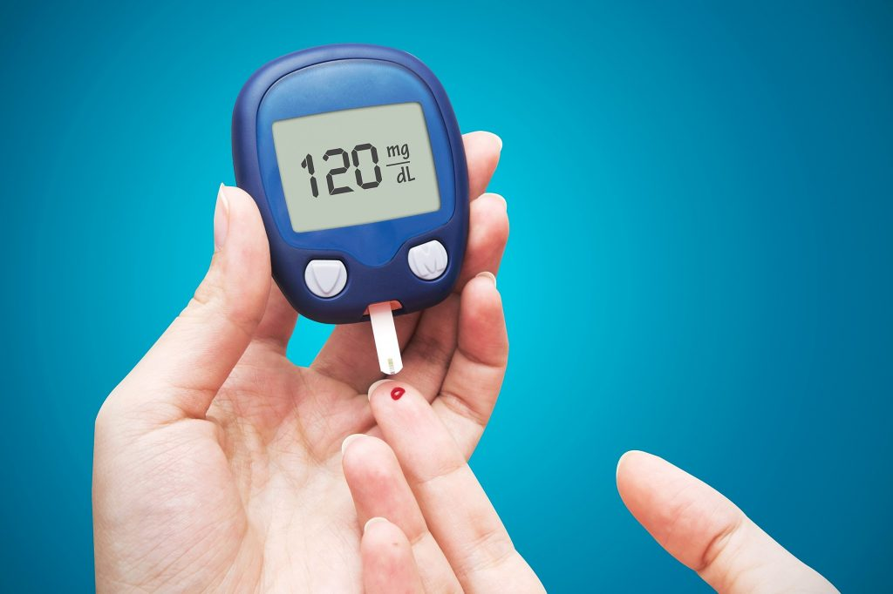

Curiosidades
Que tal saber mais sobre o mirtilo?
Bom para o coração
Você sabia que o mirtilo foi certificada como uma fruta boa para o coração pela AHA
(American Heart Association)? Um estudo conduzido pela University of East Anglia
constatou que consumir 26g (aproximadamente um copo americano) da fruta por dia resulta
em uma melhora significativa em marcadores de saúde do coração, como função vascular.
Além disso, o consumo regular da fruta melhora a função endotelial e reduz a rigidez arterial,
diminuindo, assim, o risco de parada e ataque cardíacos. O consumo de um copo de mirtilo por
dia também causa um leve aumento de HDL, o colesterol bom, responsável pela produção hormonal.

Humor e Memória
Mirtilos são ricos em polifenóis que podem ser benéficos à performance cognitiva e ao humor.
Estudos demostram que o consumo ou a suplementação da fruta em várias doses e intervalos de
tempo distintos melhoram performance cognitiva e mémoria de curto e longo prazos. Melhoras
de humor também são destacadas por alguns estudos, porém não há consenso sobre este tema.
Controle de diabetes
De acordo com o Center for Disease Control and Prevention, mais de 10% da população adulta
americana tem diabetes, uma doença que afeta a produção de insulina, substância necessária
para que a glicose entre nas células. A American Diabetes Association afirma que o mirtilo
pode facilmente fazer parte da dieta de um diabético, já que a fruta, apesar de muito doce,
possui pouco açúcar.
Há evidência científica comprovando a eficácia da fruta no combate à diabetes, reduzindo
a hemoglobina AC1 (nível médio de açúcar no sangue), já que é uma boa fonte de fibras.

Informações nutricionais
| 100g de Mirtilo |
| Nutriente |
Quantidade |
| Proteínas |
0.7g |
| Carboidratos |
14.5g |
| Açúcares |
10g |
| Fibras |
2.4g |
| Gorduras |
0.3g |
| Total |
| Calorias |
57 kcal |